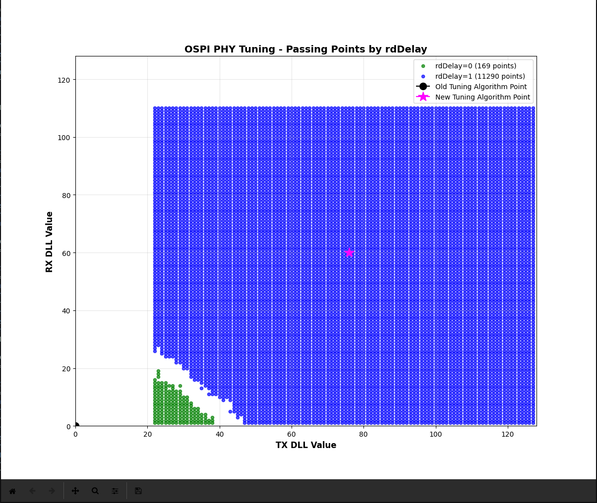

Introduction
This example demonstrates OSPI PHY tuning data collection and visualization via UART using XMODEM1k protocol.
The example:
- Initializes OSPI PHY tuning system
- Sends a ready signal to the host
- Receives a command header from the host
- Executes
OSPI_phyTuneGrapher() to collect tuning data (81,920 bytes: 5 rdDelay × 128 txDLL × 128 rxDLL)
- Transmits collected data via XMODEM1k protocol with CRC16-CCITT validation
- Sends a status response indicating completion
The host-side Python scripts (receiver and plotter) are provided to:
- Receive the XMODEM1k data stream
- Validate CRC on each block
- Save binary data to file
- Visualize passing points in a scatter plot with different colors per rdDelay
Supported Combinations
| Parameter | Value |
| CPU + OS | r5fss0-0 nortos |
| Toolchain | ti-arm-clang |
| Board | am64x-evm, am64x-sk |
| Example folder | examples/drivers/ospi/ospi_phy_grapher_uart |
Steps to Run the Example
Device Side
Host Side (Linux/PC)
Prerequisites
pip install pyserial numpy matplotlib
Connection Setup
Two UART connections required (separate USB adapters):
- CONFIG_UART0 (USART1) → Debug console (optional monitoring)
- CONFIG_UART1 (USART0) → Binary data transfer (required)
Host PC
├─ /dev/ttyUSB2 ←→ CONFIG_UART0 - Debug logs
└─ /dev/ttyUSB0 ←→ CONFIG_UART1 - Binary data
Run Receiver and Plotter
# Navigate to example directory
cd tools/boot/grapher/
# Receive PHY data from device (use CONFIG_UART1 port)
python3 ospi_phy_grapher_receiver.py /dev/ttyUSB0 -o data.bin
# Visualize results
python3 ospi_phy_grapher_plotter.py data.bin
Example output:
[INFO] Connected to /dev/ttyUSB2 at 115200 baud
[INFO] Waiting for ready signal...
[SUCCESS] Received ready signal: ... READY_FOR_SWEEP
[INFO] Receiving XMODEM1k data (81920 bytes, 80 blocks)...
[INFO] Block 1: received 1024/81920 bytes (1.3%)
...
[INFO] Block 80: received 81920/81920 bytes (100.0%)
[SUCCESS] XMODEM1k reception complete: 81920 bytes in 80 blocks
[SUCCESS] Data saved to data.bin (81920 bytes)
Optional: Mark Tuning Points
To overlay old and new tuning algorithm results:
python3 ospi_phy_grapher_plotter.py data.bin 50 60 65 70
# Arguments: data_file old_tx old_rx new_tx new_rx
Automated Full Flow
Quick Start: Complete Workflow in One Command
Flash the device, receive PHY data, and visualize results using the following command chain (run from MCU+SDK tools/boot directory):
AM64X-EVM
python3 uart_bootloader.py -p /dev/ttyUSB0 \
--bootloader=sbl_prebuilt/am64x-evm/sbl_uart.release.hs_fs.tiimage \
--file=../../examples/drivers/ospi/ospi_phy_grapher_uart/am64x-evm/r5fss0-0_nortos/ti-arm-clang/ospi_phy_grapher_uart.release.mcelf.hs_fs \
--soc=am64x_am243x; \
python3 grapher/ospi_phy_grapher_receiver.py /dev/ttyUSB0 -o am64x_evm.bin && \
python3 grapher/ospi_phy_grapher_plotter.py am64x_evm.bin
AM64X-SK
python3 uart_bootloader.py -p /dev/ttyUSB0 \
--bootloader=sbl_prebuilt/am64x-sk/sbl_uart.release.hs_fs.tiimage \
--file=../../examples/drivers/ospi/ospi_phy_grapher_uart/am64x-evm/r5fss0-0_nortos/ti-arm-clang/ospi_phy_grapher_uart.release.mcelf.hs_fs \
--soc=am64x_am243x; \
python3 grapher/ospi_phy_grapher_receiver.py /dev/ttyUSB0 -o am64x_sk.bin && \
python3 grapher/ospi_phy_grapher_plotter.py am64x_sk.bin
AM243X-EVM
python3 uart_bootloader.py -p /dev/ttyUSB0 \
--bootloader=sbl_prebuilt/am243x-evm/sbl_uart.release.hs_fs.tiimage \
--file=../../examples/drivers/ospi/ospi_phy_grapher_uart/am243x-evm/r5fss0-0_nortos/ti-arm-clang/ospi_phy_grapher_uart.release.mcelf.hs_fs \
--soc=am64x_am243x; \
python3 grapher/ospi_phy_grapher_receiver.py /dev/ttyUSB0 -o am243x_evm.bin && \
python3 grapher/ospi_phy_grapher_plotter.py am243x_evm.bin
AM243X-LP
python3 uart_bootloader.py -p /dev/ttyACM0 \
--bootloader=sbl_prebuilt/am243x-lp/sbl_uart.release.hs_fs.tiimage \
--file=../../examples/drivers/ospi/ospi_phy_grapher_uart/am243x-lp/r5fss0-0_nortos/ti-arm-clang/ospi_phy_grapher_uart.release.mcelf.hs_fs \
--soc=am64x_am243x; \
python3 grapher/ospi_phy_grapher_receiver.py /dev/ttyACM0 -o am243x_lp.bin && \
python3 grapher/ospi_phy_grapher_plotter.py am243x_lp.bin
Each workflow:
- Flashes device via uart_bootloader.py
- Receives PHY data via XMODEM1k
- Visualizes results in matplotlib scatter plot
Note: Adjust USB port (/dev/ttyUSB0 or /dev/ttyACM0) based on your host connection. AM243X-LP uses /dev/ttyACM0 by default.
Individual Steps
If you prefer to run commands separately (example for AM64X-EVM):
Step 1: Flash the device
cd tools/boot
python3 uart_bootloader.py -p /dev/ttyUSB0 \
--bootloader=sbl_prebuilt/am64x-evm/sbl_uart.release.hs_fs.tiimage \
--file=../../examples/drivers/ospi/ospi_phy_grapher_uart/am64x-evm/r5fss0-0_nortos/ti-arm-clang/ospi_phy_grapher_uart.release.mcelf.hs_fs \
--soc=am64x_am243x
Step 2: Receive PHY data
python3 grapher/ospi_phy_grapher_receiver.py /dev/ttyUSB0 -o am64x_evm.bin
Step 3: Plot the data
python3 grapher/ospi_phy_grapher_plotter.py am64x_evm.bin
For other boards, use the corresponding commands from the "Quick Start" section above, adjusting the SoC-specific paths and USB port as needed.
Application Design
System Architecture
┌────────────────────────────────────────────────────┐
│ HOST SIDE (Linux/PC) │
│ │
│ ┌──────────────────────────────────────────────┐ │
│ │ Host Scripts │ │
│ │ - ospi_phy_grapher_receiver.py │ │
│ │ - ospi_phy_grapher_plotter.py │ │
│ │ - grapher_full_flow.py │ │
│ └──────────────┬───────────────────────────────┘ │
│ │ │
└─────────────────┼──────────────────────────────────┘
│ UART (115200 bps, dual port)
├─ CONFIG_UART0: Debug logs
└─ CONFIG_UART1: Binary XMODEM data
│
┌─────────────────┼──────────────────────────────────┐
│ ┌──────────────▼───────────────────────────────┐ │
│ │ Device Application │ │
│ │ │ │
│ │ 1. Initialize OSPI + Dual UART │ │
│ │ 2. Send "READY_FOR_SWEEP\r\n" signal │ │
│ │ 3. Receive 32-byte command header │ │
│ │ 4. Run OSPI_phyTuneGrapher() (~30 sec) │ │
│ │ └─ Collect [5][128][128] tuning data │ │
│ │ 5. Send 80 XMODEM1k blocks (81,920 bytes) │ │
│ │ 6. Send 16-byte status response │ │
│ │ 7. Idle/Loop │ │
│ └──────────────────────────────────────────────┘ │
│ │
│ ┌──────────────────────────────────────────────┐ │
│ │ OSPI PHY Tuning │ │
│ │ - 128 TX DLL values × 128 RX DLL values │ │
│ │ - 5 read delay values │ │
│ │ - 1 byte per point (0=fail, >0=pass) │ │
│ └──────────────────────────────────────────────┘ │
│ │
│ DEVICE SIDE (MCU+SDK) │
└────────────────────────────────────────────────────┘
Data Flow Sequence
Host Device
│ │
│←─── "READY_FOR_SWEEP\r\n" ────────┤
│ │
│─── Send command header (32B) ─────→│
│ Magic: 0x47524150 ("PRAG") │
│ OpType: 0xFD │
│ Size: 81920 │
│ │
│ ┌─── PHY Sweep (~30 sec) ───┐
│ │ OSPI_phyTuneGrapher() │
│ └──────────────────────────┬─┘
│ │
│←─ XMODEM1k Block #1 ──────────────────────────┤
│ ├─ STX (0x02)
│ ├─ Block#1 + Complement
│ ├─ 1024 bytes data
│ └─ CRC16 (CCITT)
│
│ ─ ACK (0x06) ───────────────────────────────→
│
│ (repeat 80 blocks = 81,920 bytes)
│
│←─ XMODEM EOT (0x04) ──────────────────────────┤
│
│ ─ ACK (0x06) ───────────────────────────────→
│
│←─ Status response (16B) ──────────────────────┤
│ Magic: 0x47524152 ("RARG")
│ Status: 0x00000000 (success)
│
└─ Parse & Plot
Dual UART Architecture
CONFIG_UART0 :
- Purpose: Debug logging via DebugP
- Content: Operational status and error messages
- Impact: Can be monitored separately without affecting data transfer
CONFIG_UART1 :
- Purpose: Binary XMODEM1k data transfer
- Content: Pure binary frames (no debug text)
- Impact: Clean transfer without corruption
This separation ensures:
- ✅ No debug text corrupts XMODEM binary frames
- ✅ Better diagnostics (monitor both streams simultaneously)
- ✅ Production-ready implementation
Data Format
Binary Output
File Structure (81,920 bytes total):
Byte Range Data Description
────────────────── ──────────────────────── ───────────────────
0 - 16,383 arrays[0][0..127][0..127] rdDelay=0 (128×128)
16,384 - 32,767 arrays[1][0..127][0..127] rdDelay=1 (128×128)
32,768 - 49,151 arrays[2][0..127][0..127] rdDelay=2 (128×128)
49,152 - 65,535 arrays[3][0..127][0..127] rdDelay=3 (128×128)
65,536 - 81,919 arrays[4][0..127][0..127] rdDelay=4 (128×128)
Element Meaning:
- 0: Test point failed (could not read)
- **>0**: Test point passed (valid read data)
Array Organization: C-style row-major (txDLL varies fastest)
Visualization
Scatter Plot:
- X-axis: TX DLL values (0-128)
- Y-axis: RX DLL values (0-128)
- Colors: One per rdDelay value
- rdDelay=0: Green
- rdDelay=1: Blue
- rdDelay=2: Red
- rdDelay=3: Orange
- rdDelay=4: Purple
- Points: Only passing points plotted
Protocol Specification
Phase 1: Device Ready Signal
Device sends (asynchronous, after boot):
ASCII: "READY_FOR_SWEEP\r\n"
Purpose: Indicate device is ready for PHY sweep
Phase 2: Host Sends Command
Host sends (32-byte binary header):
Byte Range Size Field Description
────────── ──── ───── ───────────
0x00-0x03 4 Magic 0x47524150 (little-endian "PRAG")
0x04-0x07 4 Operation Type 0xFD (PHY tuning operation)
0x08-0x0B 4 Offset Flash offset (unused, set to 0)
0x0C-0x0F 4 Size Data size in bytes (81920)
0x10-0x1F 16 Reserved All zeros
Device validates:
- ✅ Magic number is 0x47524150
- ✅ Operation type is 0xFD
- ✅ Size is 81920
- ❌ If any check fails, send error status and abort
Phase 3: Device Runs PHY Sweep
Device executes:
Data collected (81,920 bytes):
Array Layout: [5 rdDelays][128 txDLL][128 rxDLL]
Total Elements: 5 × 128 × 128 = 81,920
Element Type: uint8_t (1 byte each)
Byte Order: C-style row-major (txDLL varies fastest)
Element Values: 0 = fail, >0 = pass
Phase 4: Device Sends Data via XMODEM1k
XMODEM1k Block Format:
Byte Size Field Description
──── ──── ───── ───────────
0 1 STX 0x02 (XMODEM1k start)
1 1 Block Number 1-255 (wraps at 256)
2 1 Block Number Comp ~BlockNumber
3-1026 1024 Data Raw 1024-byte payload
1027 1 CRC High Byte (crc >> 8) & 0xFF
1028 1 CRC Low Byte crc & 0xFF
────────────────────────────────────────────
Total: 1029 bytes per frame
CRC-16 CCITT Calculation:
- Polynomial: 0x1021
- Initial value: 0x0000
- Precomputed lookup table (256 entries)
- Critical: Mask intermediate result to prevent overflow:
crc = ((crc << 8) ^ TABLE[(crc >> 8) ^ byte]) & 0xFFFF
Transmission Sequence:
Host Device
│ │
│ Send STX+Block1
│ (1024 data bytes)
│←─────────────────────────────────────┤
│ + CRC16
│
├─ Validate CRC ──────────┐ │
│ ├─ Pass: Send ACK ────→ │ │
│ └─ Fail: Send NAK ────→ │ Retry │
│ (up to 20 times) │ │
│ ◄─┼───────────┤
│ Send STX+Block2
│
│ (repeat 80 blocks = 81,920 bytes)
│
│ ◄─────────────┤
│ Send EOT (0x04)
│
├─ Send ACK (0x06) ────────────────────→
Retry Strategy:
- Device retries up to 20 times if ACK not received
- Host retries up to 20 times if CRC fails
- Timeout: 5 seconds per block (increased for USB-UART adapters)
Phase 5: Device Sends Status Response
Status Header (16 bytes):
Byte Range Size Field Value
────────── ──── ───── ─────
0x00-0x03 4 Magic 0x47524152 (little-endian "RARG")
0x04-0x07 4 Status Code 0x00000000 (success) or error code
0x08-0x0F 8 Reserved All zeros
Status Codes:
0x00000000 SUCCESS PHY sweep completed, data sent
0x10000001 MAGIC_ERROR Invalid magic in command header
0x20000001 OPTYPE_ERROR Invalid operation type
0x30000001 PHY_SWEEP_ERROR PHY tuning sweep failed
0x40000001 XMODEM_ERROR XMODEM transmission failed
Timing Analysis
| Phase | Duration | Notes |
| Device initialization | 1 sec | OSPI, UART setup |
| PHY sweep | ~30 sec | 5 rdDelays × 128 txDLL × 128 rxDLL |
| XMODEM send | ~7 sec | 80 blocks @ 1024B each, 115200 baud |
| Status send | 0.1 sec | 16-byte response |
| Total | **~38-40 sec** | Per sweep |
XMODEM Throughput:
- 81,920 bytes total
- 1,029 bytes per XMODEM frame (1024 data + 5 overhead)
- ~80 frames + 1 EOT
- At 115200 baud ≈ 11.5 KB/sec effective
- Time: ~7.1 seconds
Implementation Details
Key Design Decisions
- XMODEM1k instead of XMODEM
- 1024-byte blocks reduce protocol overhead
- Fit within typical MCU buffer constraints
- Proven protocol with wide tool support
- Dual UART Separation
- CONFIG_UART0 for DebugP logging
- CONFIG_UART1 for binary data transfer
- Eliminates debug text corruption of XMODEM frames
- CRC16 CCITT Validation
- Standard XMODEM CRC
- Hardware accelerators available on many MCUs
- Reliable error detection
- 32-byte Command Header
- Matches bootloader Uniflash pattern
- Consistent with existing infrastructure
- Includes validation magic and operation type
- Transaction-based UART API
- Single bulk transfer superior to byte-by-byte polling
- More reliable over USB-UART adapters
- Deterministic operation in polling mode
- Polling Mode (No Interrupts)
intrEnable = "DISABLE" in SysConfig- Matches bootloader pattern
- Simplifies synchronization during transfer
Error Handling
Device Side
- Validates command magic and operation type
- Validates data size (must be 81920)
- Returns error status if PHY sweep fails
- Retries XMODEM blocks on CRC error (up to 20 times)
- Sends NAK on invalid block, then resends
Host Side
- Validates CRC16 on each XMODEM block
- Retries up to 20 times per block
- Detects timeout and reports to user
- Validates status magic and code
- Reports transfer errors with detailed diagnostics
Performance Optimizations
- Precomputed CRC lookup table: Avoid runtime polynomial calculations
- 1K blocks in XMODEM: Larger blocks reduce protocol overhead
- Single UART transaction: Minimize context switching
- Dual UART: Parallel debug logging without affecting data transfer
Dependencies
Device:
- OSPI driver (already available)
- UART driver (already available)
OSPI_phyTuneGrapher() function from ospi_phy.c
Host:
- Python 3.6+
pyserial: pip install pyserialnumpy: pip install numpymatplotlib: pip install matplotlib
Critical Bug Fixes Applied
UART RX Issue (FIXED ✅)
Problem: Device couldn't receive command bytes from PC Root Cause: Byte-by-byte UART_read() incompatible with polling mode Solution: Changed to single 32-byte transaction
CRC Overflow (FIXED ✅)
Problem: Receiver crashed with overflow at block 33 Root Cause: CRC intermediate values exceeded 16 bits Solution: Added masking: crc = ((crc << 8) ^ TABLE[(crc >> 8) ^ byte]) & 0xFFFF
Debug Corruption (FIXED ✅)
Problem: Debug logs corrupted XMODEM binary frames Root Cause: DebugP output mixed with binary data on same UART Solution: Dual UART architecture separates debug and data
See Also
OSPI
Sample Output
OSPI PHY Grapher UART Example
==============================
Debug output on UART0
Binary data transfer on UART1 (CONFIG_UART1)
==============================
Opened CONFIG_UART1 for binary data
[OSPI PHY Grapher UART] Starting...
[OSPI PHY Grapher UART] Sending ready signal
[OSPI PHY Grapher UART] Starting PHY tuning sweep...
[OSPI PHY Grapher UART] PHY sweep complete. Data collected: 81920 bytes
[OSPI PHY Grapher UART] Starting XMODEM1k transmission...
[OSPI PHY Grapher UART] XMODEM1k transmission complete
[OSPI PHY Grapher UART] Complete
Example test passed!

OSPI PHY Tuning - Passing Points by rdDelay
Troubleshooting
"Invalid STX: 0x5B"
Debug text corrupting XMODEM data. Ensure:
- Correct firmware flashed (debug logs removed)
- Using CONFIG_UART1 port for receiver (not CONFIG_UART0)
- No other terminals connected to device
"Timeout waiting for ready signal"
Device not responding. Check:
- Device is powered on
- Correct firmware loaded
- Device console shows logs on CONFIG_UART0
"CRC errors during transfer"
Usually recovers automatically. If persistent:
- Try lower baud rate:
-b 9600
- Check USB cable quality
- Move away from RF sources
Additional Resources
- Host Scripts:
examples/drivers/ospi/ospi_phy_grapher_uart/
ospi_phy_grapher_receiver.py - XMODEM1k receiverospi_phy_grapher_plotter.py - Data visualizerospi_phy_grapher_debug.py - Debug monitor
 1.8.20
1.8.20